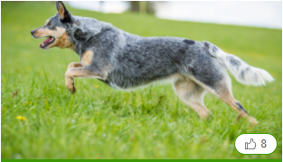

Ausztrál pásztorkutya
Az amerikai pitbull terrier története:
Pitbull“: egy fajta vagy egy amerikai staffordshire-variáció?Bár a legtöbb kutyabarát ismeri a „pitbull“ elnevezést, gyakran nem feltétlenül egyértelmű, milyen kutyát értenek alatta. Ennek az is háteteret szolgáltat, hogy a kutyatenyésztők legnagyobb nemzetközi csúcsszervezete, az FCI (Fédération Cynologique Internationale) a mai napig nem ismerte el önálló fajtaként. Ennek megértéséhez tekintsünk bele kicsit az amerikai pitbull terrier múltjába, amiről már a neve is sokat elmond: a tenyésztési törekvések hazája az USA, ahol a fajtát a angol bulldogok és a terrierek keresztezésével létrehozták. Ezekből a keresztezésekből született a röviden „staff“-nek nevezett amerikai staffordshire terrier Terrier kutyafajta. A szelektív tenyésztés célja egy olyan jó négylábú harcos vagyis küzdőkutya, egy ún. „pit“ volt, amely az állatküzdelmek arénájában bizonyít. Itt a pitbullokat pl. felhergelték patkányokkal szemben, hogy adott idő alatt minél több patkányt megöljenek. De a más kutyákkal való küzdelmek is sokáig napirenden voltak. Végül aztán „pitbull“-nak nevezték azokat az amerikai staffordshire terriereket, amelyek ilyen küzdelmekben vettek részt, ezek „munkakutyák“ voltak. Ezen kutyák esetében sokkal inkább állta a helyét a mai nézőpontbók kétségbe vonható karakter: előnyben részesítették a más kutyákkal szemben agresszív, alacsony ingerküszöbű állatokat, a kinézet pedig mellékes szempont volt. Ezért mutat az amerikai pitbull terrier-ek többsége hasonlóságot az amerikai staffordshire terrierrel, mindemellett persze előfordulhatnak optikai eltérések. Az újonnan alapított United Kennel Club (UKC), amely a mai napig nem kooperál az FCI-vel, 1898-ban önálló fajtaként ismerte el az amerikai pitbull terriert. Sokáig folytak még keresztezések a staff és a pitbull között. A világ többi részén, s ami a köznyelvet illeti, az USA-ban is kifejlődött a amerikai pitbull terrier, mint általánosan a harci kutya fölérendelt fogalma. Sajnos a tiltások ellenére sok országban még mindig vannak kutyaviadalok, s ennek megfelelően olyan állatok is, melyeket speciálisan az ilyen szörnyűséges színjátékokra tenyésztenek.
Az amerikai pitbull terrier kinézete:
A staff ikertestvére
Szükségképpen a pitbull-ok nagyon hasonlítanak az amerikai staffordshire terrierekhez: az amerikai pitbull terrier izmos, tömör kutya, s 53 cm-es vállmagasságával 27 kg-ot is nyomhat a mérlegen. Feltűnő rajta bikaszerű feje, s a félig felálló, lehajló fülek, amelyeket már csak azért sem vágtak le, hogy még veszélyesebb kinézetet kölcsönözzenek a kutyának. A kupírozás azaz a fülek és farkak levágása, megcsonkítása időközben a legtöbb európai országban már tiltólistás. A kutya rövid szőrzete bármilyen színű lehet – egyetlen kivétellel: ez a merle színkombináció. Mivel Európában leginkább különböző ú.n. harci kutyák keverékeit titulálják pitbullnak, a legtöbb esetben felesleges egy közelebbi leírás. Ami azonban fontos, hogy sok országban már az ilyen kutyához hasonlatos kinézet elegendő ahhoz, hogy a szóban forgó állatot ne engedjék be az országba.